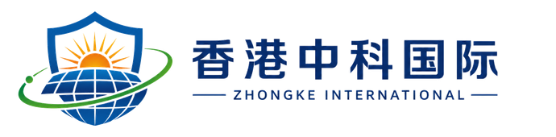

城市运行预警
围绕公共设施、自然灾害、交通与城市运行状态进行风险提示。

通过信息采集、研判分析、风险提示、联动协同和持续跟踪，帮助客户提前识别不确定性。
围绕公共设施、自然灾害、交通与城市运行状态进行风险提示。
识别工程建设、现场执行、供应链和节点延期风险。
以公共安全和秩序维护为边界，提供非敏感风险协同材料。
跟踪重点物资、供应商、运输和交付中断风险。
从信息到行动，把分散风险转化为清晰提示和可跟进行动。
汇集城市运行、项目安全与供应链信息，形成清晰的预警判断与行动建议。
面向公共设施、交通状态和事件提示的信息汇集与会议研判场景。
结合公开物流、项目节点和重点物资信息，形成风险提示与沟通材料。
状态监测、事件提示和运行风险沟通。
施工、设备、人员和交付节点风险提示。
公共安全信息协同和会议支持。
供应状态、物流节奏和替代方案提示。